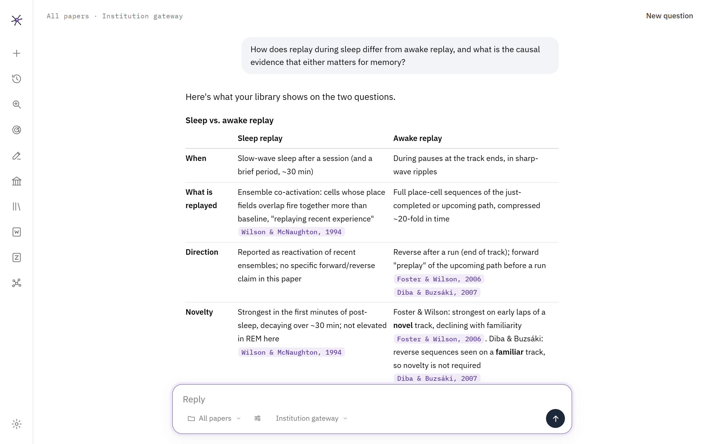
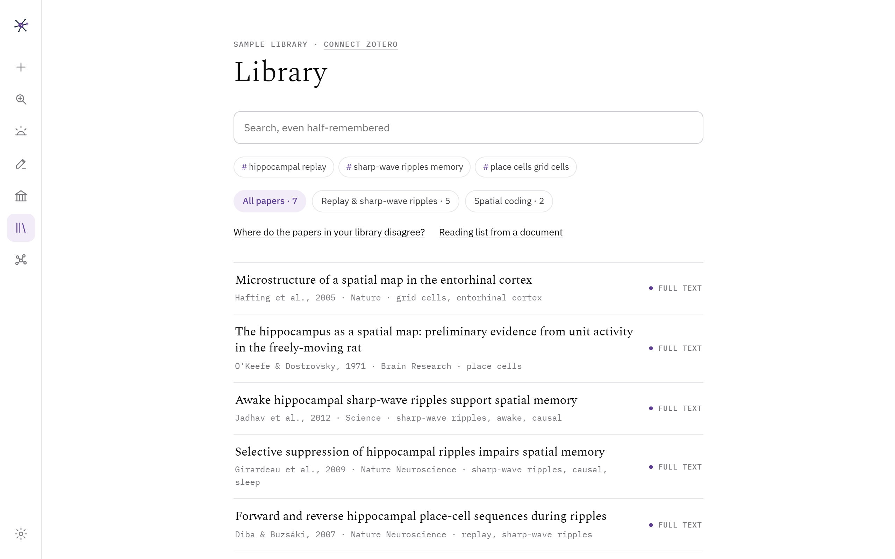

A research assistant that lives in your Zotero library.
Ask questions answered only from your own papers, hear about new papers the day they matter to you, see where your field comes from, and check a draft against the literature. It runs on your computer, with the AI you choose. It works as an agent, searching and reading on its own, and asks before it changes anything in your library.
Or the zip version, no installer. macOS is planned.
Built around the way researchers read
Everything starts from your own library: the papers you chose, your highlights and notes, and your lab's shared folders.
Answers from your papers only
Like a notebook that has read everything you saved. Each claim cites the paper it comes from. Going deep into one paper, it follows the argument: the claim in the introduction, the figure that tests it, the conclusion in the discussion.
New papers, only the ones that matter
Sweeps PubMed, arXiv and bioRxiv a few times a day and tells you at once about a paper that is truly on your question, by phone or by email. A weekly or monthly summary covers the rest, and, if you want, the grants and fellowships you could apply to. Papers that only share your words, in another species or another question, are kept out.
Standing on the shoulders of giants
A timeline of your field from its roots: the landmark discoveries, the theories and who challenged them, the mechanisms and methods, and the open questions, built from what your own library cites.
A draft checked against its sources
Upload an introduction or a discussion. Every cited claim is checked against the paper it cites, uncited claims get a suggested source from your library, and your document comes back with comments in Word. A panel beside Word finds support for a sentence and inserts Zotero citations.
Deep search beyond your library
Give it a question; it reads hundreds of abstracts, follows citations both ways, and returns the papers that answer it, grouped and graded, with what is still missing.
In Zotero, on your phone, on your other computers
A panel beside Zotero's reader explains a passage or a figure of the paper you're reading. Ask from your phone, anywhere, end-to-end encrypted. Sign in with the same Zotero account on another computer and your conversations and settings are there. Hebrew and English.

Get started in a few minutes
- Download and run the installer. It adds Ganglion to your desktop and Start menu; no administrator rights needed.
- Connect Zotero with one click (Settings → Zotero), and choose which libraries to include, your lab's shared ones too.
- Connect an AI. Use what you have:
Your institution's AI gatewayClaudeChatGPTGeminiA free model on your computer
- Say what you work on, in a few sentences. Ganglion works out the field's keywords and starts watching for new papers.
Updating: Ganglion tells you when a new version is out (Settings → About). Run the new installer over the old one; your papers, settings and conversations are kept.
Your library stays yours
Ganglion has no server of its own and collects nothing about you. Your library stays on your computer and in your Zotero account. Paper text goes only to the AI you connect, when you ask a question or a check runs; with a model on your own computer, it never leaves at all. Search services (PubMed, arXiv, bioRxiv, Europe PMC, Crossref, OpenAlex, Semantic Scholar) receive search terms, never your papers.
Your AI keys, the phone pairing and the notification channel stay on each computer. What follows you between computers travels as notes inside your own private Zotero library, and only if you keep that option on.